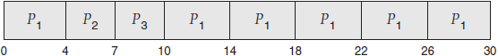
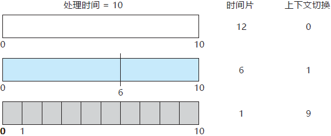
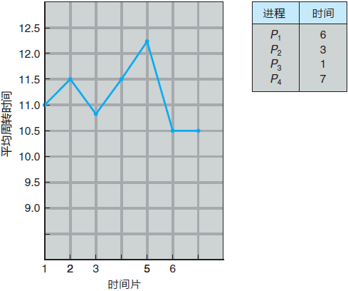
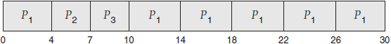
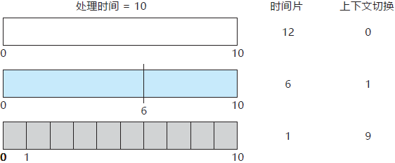
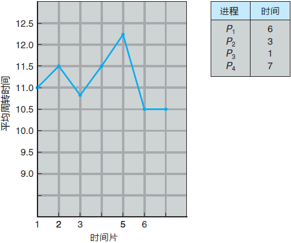

首页 > 编程笔记
时间片轮转（RR）调度算法（详解版）
时间片轮转（RR）调度算法是专门为分时系统设计的。它类似于 FCFS调度，但是增加了抢占以切换进程。
该算法中，将一个较小时间单元定义为时间量或时间片。时间片的大小通常为 10~100ms。就绪队列作为循环队列。CPU 调度程序循环整个就绪队列，为每个进程分配不超过一个时间片的 CPU。
为了实现 RR 调度，我们再次将就绪队列视为进程的 FIFO 队列。新进程添加到就绪队列的尾部。CPU 调度程序从就绪队列中选择第一个进程，将定时器设置在一个时间片后中断，最后分派这个进程。
接下来，有两种情况可能发生。进程可能只需少于时间片的 CPU 执行。对于这种情况，进程本身会自动释放 CPU。调度程序接着处理就绪队列的下一个进程。否则，如果当前运行进程的 CPU 执行大于一个时间片，那么定时器会中断，进而中断操作系统。然后，进行上下文切换，再将进程加到就绪队列的尾部，接着 CPU 调度程序会选择就绪队列内的下一个进程。
不过，采用 RR 策略的平均等待时间通常较长。假设有如下一组进程，它们在时间 0 到达，其 CPU 执行以 ms 计：
如果使用 4ms 的时间片，那么 P1 会执行最初的 4ms。由于它还需要 20ms，所以在第一个时间片之后它会被抢占，而 CPU 就交给队列中的下一个进程。由于 P2 不需要 4ms，所以在其时间片用完之前就会退出。CPU 接着交给下一个进程，即进程 P3。在每个进程都得到了一个时间片之后，CPU 又交给了进程 P1 以便继续执行。因此，RR 调度结果如下：

现在，我们计算这个调度的平均等待时间。P1 等待 10-4 = 6ms，P2 等待 4ms，而 P3 等待 7ms。因此，平均等待时间为
在 RR 调度算法中，没有进程被连续分配超过一个时间片的 CPU（除非它是唯一可运行的进程）。如果进程的 CPU 执行超过一个时间片，那么该进程会被抢占，并被放回到就绪队列。因此，RR调度算法是抢占的。
如果就绪队列有 n 个进程，并且时间片为 q，那么每个进程会得到
RR 算法的性能很大程度取决于时间片的大小。在一种极端情况下，如果时间片很大，那么 RR 算法与 FCFS 算法一样。相反，如果时间片很小（如 1ms），那么 RR 算法可以导致大量的上下文切换。
例如，假设我们只有一个需要 10 个时间单元的进程。如果时间片为 12 个时间单元，那么进程在一个时间片不到就能完成，而且没有额外开销。如果时间片为 6 个时间单元，那么进程需要 2 个时间片，并且还有一个上下文切换。如果时间片为 1 个时间单元，那么就会有 9 个上下文切换，相应地使进程执行更慢（图 1)。

图 1 更小时间片如何增加上下文切换
因此，我们希望时间片远大于上下文切换时间。如果上下文切换时间约为时间片的 10%，那么约 10% 的 CPU 时间会浪费在上下文切换上。在实践中，大多数现代操作系统的时间片为 10~100ms，上下文切换的时间一般少于 10ms；因此，上下文切换的时间仅占时间片的一小部分。
周转时间也依赖于时间片大小。正如从图 2 中所看到的，随着时间片大小的增加，一组进程的平均周转时间不一定会改善。一般情况下，如果大多数进程能在一个时间片内完成，那么平均周转时间会改善。

图 2 周转时间如何随着时间片大小而改变
例如，假设有三个进程，都需要 10 个时间单元。如果时间片为 1 个时间单元，那么平均周转时间为 29；如果时间片为 10，那么平均周转时间会降为 20；如果再考虑上下文切换时间，那么平均周转时间对于较小时间片会增加，这是因为需要更多的上下文切换。
尽管时间片应该比上下文切换时间要大，但也不能太大。如果时间片太大，那么 RR 调度就演变成了 FCFS 调度。根据经验，80% 的 CPU 执行应该小于时间片。
该算法中，将一个较小时间单元定义为时间量或时间片。时间片的大小通常为 10~100ms。就绪队列作为循环队列。CPU 调度程序循环整个就绪队列，为每个进程分配不超过一个时间片的 CPU。
为了实现 RR 调度，我们再次将就绪队列视为进程的 FIFO 队列。新进程添加到就绪队列的尾部。CPU 调度程序从就绪队列中选择第一个进程，将定时器设置在一个时间片后中断，最后分派这个进程。
接下来，有两种情况可能发生。进程可能只需少于时间片的 CPU 执行。对于这种情况，进程本身会自动释放 CPU。调度程序接着处理就绪队列的下一个进程。否则，如果当前运行进程的 CPU 执行大于一个时间片，那么定时器会中断，进而中断操作系统。然后，进行上下文切换，再将进程加到就绪队列的尾部，接着 CPU 调度程序会选择就绪队列内的下一个进程。
不过，采用 RR 策略的平均等待时间通常较长。假设有如下一组进程，它们在时间 0 到达，其 CPU 执行以 ms 计：
| 进程 | 执行时间 |
|---|---|
| P1 | 24 |
| P2 | 3 |
| P3 | 3 |
如果使用 4ms 的时间片，那么 P1 会执行最初的 4ms。由于它还需要 20ms，所以在第一个时间片之后它会被抢占，而 CPU 就交给队列中的下一个进程。由于 P2 不需要 4ms，所以在其时间片用完之前就会退出。CPU 接着交给下一个进程，即进程 P3。在每个进程都得到了一个时间片之后，CPU 又交给了进程 P1 以便继续执行。因此，RR 调度结果如下：

现在，我们计算这个调度的平均等待时间。P1 等待 10-4 = 6ms，P2 等待 4ms，而 P3 等待 7ms。因此，平均等待时间为
17/3 = 5.66ms。在 RR 调度算法中，没有进程被连续分配超过一个时间片的 CPU（除非它是唯一可运行的进程）。如果进程的 CPU 执行超过一个时间片，那么该进程会被抢占，并被放回到就绪队列。因此，RR调度算法是抢占的。
如果就绪队列有 n 个进程，并且时间片为 q，那么每个进程会得到
1/n 的 CPU 时间，而且每次分得的时间不超过 q 个时间单元。每个进程等待获得下一个 CPU 时间片的时间不会超过 (n-1)q 个时间单元。例如，如果有 5 个进程，并且时间片为 20ms，那么每个进程每 100ms 会得到不超过 20ms 的时间。RR 算法的性能很大程度取决于时间片的大小。在一种极端情况下，如果时间片很大，那么 RR 算法与 FCFS 算法一样。相反，如果时间片很小（如 1ms），那么 RR 算法可以导致大量的上下文切换。
例如，假设我们只有一个需要 10 个时间单元的进程。如果时间片为 12 个时间单元，那么进程在一个时间片不到就能完成，而且没有额外开销。如果时间片为 6 个时间单元，那么进程需要 2 个时间片，并且还有一个上下文切换。如果时间片为 1 个时间单元，那么就会有 9 个上下文切换，相应地使进程执行更慢（图 1)。

图 1 更小时间片如何增加上下文切换
因此，我们希望时间片远大于上下文切换时间。如果上下文切换时间约为时间片的 10%，那么约 10% 的 CPU 时间会浪费在上下文切换上。在实践中，大多数现代操作系统的时间片为 10~100ms，上下文切换的时间一般少于 10ms；因此，上下文切换的时间仅占时间片的一小部分。
周转时间也依赖于时间片大小。正如从图 2 中所看到的，随着时间片大小的增加，一组进程的平均周转时间不一定会改善。一般情况下，如果大多数进程能在一个时间片内完成，那么平均周转时间会改善。

图 2 周转时间如何随着时间片大小而改变
例如，假设有三个进程，都需要 10 个时间单元。如果时间片为 1 个时间单元，那么平均周转时间为 29；如果时间片为 10，那么平均周转时间会降为 20；如果再考虑上下文切换时间，那么平均周转时间对于较小时间片会增加，这是因为需要更多的上下文切换。
尽管时间片应该比上下文切换时间要大，但也不能太大。如果时间片太大，那么 RR 调度就演变成了 FCFS 调度。根据经验，80% 的 CPU 执行应该小于时间片。
关注公众号「站长严长生」，在手机上阅读所有教程，随时随地都能学习。内含一款搜索神器，免费下载全网书籍和视频。

微信扫码关注公众号